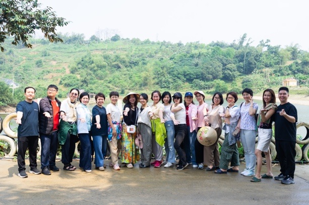

Khoảnh khắc đã thay đổi cuộc đời mình...
Hơn 10 năm trước, mình cũng từng là một người rất loay hoay. Không phải vì mình lười biếng.
Cũng không phải vì mình không có năng lực, mà vì mình không biết mình thực sự là ai và mình muốn sống cuộc đời như thế nào.
Mình học ngành kỹ thuật, ra trường rồi đi làm văn phòng, hỗ trợ dự án, rồi nghỉ sinh 2 con liên tiếp. Trải qua nhiều công việc khác nhau, mỗi lần thay đổi công việc, mình lại tự hỏi:
"Có phải đây là điều mình muốn làm cả đời không?"
Nhưng câu trả lời luôn là... "Mình không chắc chắn về điều gì cả".
Có những lần gặp lại bạn bè, mình ngại nói về công việc của mình. Nhìn mọi người đều có một con đường rõ ràng, còn mình thì cứ thay đổi hết công việc này đến công việc khác. Trong lòng luôn có một cảm giác rất khó gọi tên.
Có phải mình đang kém cỏi hơn người khác? Hay mình là người không đủ kiên trì?
Nhìn bên ngoài, cuộc sống của mình vẫn rất bình thường. Có gia đình, có con, có công việc.
Nhưng bên trong... Mình ngày càng mất kết nối với chính mình, không biết điều gì thật sự quan trọng. Không biết mình giỏi điều gì. Không biết mình muốn trở thành ai.
Điều đáng sợ nhất không phải là chưa tìm thấy câu trả lời. Mà là mỗi năm trôi qua... Mình vẫn tiếp tục sống trong sự mơ hồ đó.
Rồi mình bắt đầu học Khai vấn.
Ban đầu, mình cũng nghĩ coaching sẽ giúp mình tìm ra một hướng đi mới. Nhưng điều mình nhận được còn lớn hơn thế. Mình bắt đầu nhìn thấy "hệ điều hành" đã âm thầm dẫn dắt mọi lựa chọn của mình suốt nhiều năm.
Đó là những niềm tin rằng:
- Mình phải giỏi hơn mới đủ giá trị.
- Mình phải làm hài lòng mọi người.
- Mình phải chọn đúng ngay từ đầu.
- Mình không được phép thất bại.
Chính những niềm tin ấy khiến mình luôn nghi ngờ bản thân, so sánh với người khác và không dám lựa chọn điều mình thực sự mong muốn.
Sống theo những khuôn mẫu định sẵn của xã hội. Và vận hành theo la bàn không dành cho mình để ngày càng thấy mệt mỏi, mất động lực và dễ bỏ cuộc giữa chừng.
Và khi đi theo lối mòn đó quá lâu, cảm thấy vô định, trống rỗng, vì bản thân mất kết nối với nhu cầu thực sự ở bên trong.
Khi bắt đầu thực hành khai vấn, lần đầu tiên sau rất nhiều năm... Mình không còn đi tìm câu trả lời ở bên ngoài nữa. Mình bắt đầu học cách lắng nghe chính mình. Mình gọi đó là tìm lại chiếc La Bàn Nội Tâm.
Suốt 8 năm qua...
Mình chỉ kiên trì làm một việc. Đi tìm sự rõ ràng từ bên trong cho chính mình. Và đồng hành cùng người khác tìm lại sự rõ ràng ấy.
Lựa chọn đó đã đưa mình đi qua hành trình từ một người coach cá nhân, với những phiên coach đầu tiên vài trăm nghìn, đến hành trình đồng hành chuyên sâu cho khách hàng cá nhân trị giá vài trăm triệu đồng. Rồi mình phát triển hơn khi trở thành một người chia sẻ, đào tạo về khai vấn chuyển hóa chuyên sâu.
Mình không chỉ tìm ra một hướng đi sự nghiệp thực sự phù hợp với bản thân, mà còn thay đổi cách mình hiện diện với cuộc sống.
Vượt qua những niềm tin giới hạn về bản thân để phát triển công việc kinh doanh. Có một lối sống cân bằng, hài hòa giữa gia đình, công việc, và mở rộng nội tâm mỗi ngày.
Cách mình từng bước kiến tạo sự trọn vẹn ở bên trong nội tâm, để có được sự đủ đầy trong các khía cạnh đời sống.
Từ một người luôn nghi ngờ bản thân, sợ chọn sai và đi tìm câu trả lời ở bên ngoài...
Mình trở thành một người đủ tin vào giá trị của mình, đủ rõ ràng để kiến tạo một sự nghiệp đúng với chính mình và đủ vững vàng để bước qua những thử thách của cuộc sống mà không đánh mất phương hướng.
Đó không phải là vì mình có mọi câu trả lời. Mà vì đã tìm lại được chiếc La Bàn Nội Tâm của chính mình.
Nhưng điều tự hào nhất... Không phải là số học viên. Không phải là doanh thu. Cũng không phải là vị trí mình đang có hôm nay.
Điều mình trân trọng nhất là... Không còn sống trong nỗi sợ phải chứng minh giá trị của bản thân. Mình không còn chạy theo định nghĩa thành công của người khác. Mình hiểu điều gì là giá trị cốt lõi của mình.
Và ngay cả khi làm kinh doanh, có những lúc thuận lợi, có những lúc đầy thử thách... Mình vẫn biết mình đang đi đâu. Bởi lần đầu tiên trong cuộc đời...
Mình có một chiếc La Bàn Nội Tâm đủ vững để dẫn đường cho chính mình.
Khi đồng hành với gần 500 học viên và khách hàng...



Mình nhận ra một điều rất giống nhau, thường điều khiến người ta mắc kẹt chưa bao giờ là thiếu năng lực. Hầu hết nhiều người rất chăm chỉ. Đã học rất nhiều. Đã cố gắng rất nhiều.
Điều khiến họ chưa thể bước tiếp... Là họ chưa đủ tin vào chính mình để đưa ra một lựa chọn.
Và khi chưa có sự rõ ràng ở bên trong... Họ sẽ tiếp tục đi tìm thêm một khóa học. Một lời khuyên. Một định hướng mới.
Trong khi điều họ thực sự cần... Là tìm lại chiếc La Bàn Nội Tâm của chính mình.
Đó cũng là lý do La Bàn Nội Tâm ra đời.